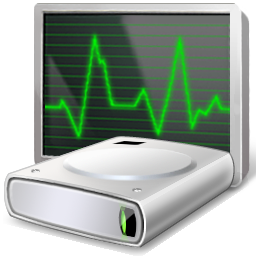

Welcome to WindowSMART 2015!
Dojo North Software's WindowSMART 2015 Help is designed to provide you a ready means to answer your questions about the WindowSMART software, from how to use it to what various statuses and messages mean. The WindowSMART help is provided in the form of a compiled HTML (CHM) help file, which consists of several tabs to make it easy to find what it is you're looking for.
Not sure where to start? Check out the pages in the Overview chapter.
WindowSMART 2015 is a Shareware application. This means that you are free to use the software for a limited period of time (30 days), after which you must either "register" it (purchase a license for a fee) or uninstall the software from your computer. Please see the Pricing section of this help. During the WindowSMART public beta, registration is not required, but donations are welcome. Those who donate will receive a license comensurate with their donation when WindowSMART is released as a final product.
WindowSMART 2015 can be installed on 32-bit (x86) and 64-bit (x64) versions of Windows. Per the WindowSMART license agreement, you must be running a genuine, lawfully licensed installation of Windows. Running WindowSMART on a non-genuine, pirated or counterfeit version of Windows constitutes an egregious violation of the WindowSMART license agreement, regardless of whether you paid the registration fee.
The following Windows editions are supported:
Clients:
Servers:
WindowSMART 2015 cannot be installed or run on Windows Home Server 2011, Windows Small Business Server 2011 Essentials, Windows Storage Server 2008 R2 Essentials or Windows Server 2012 Essentials. For these Windows versions, please install Home Server SMART 2015 instead, which includes all of the functionality of WindowSMART 2015 but is specially designed for those operating systems. Please note that nearly all of the content in this help file applies equally to Home Server SMART 2015.